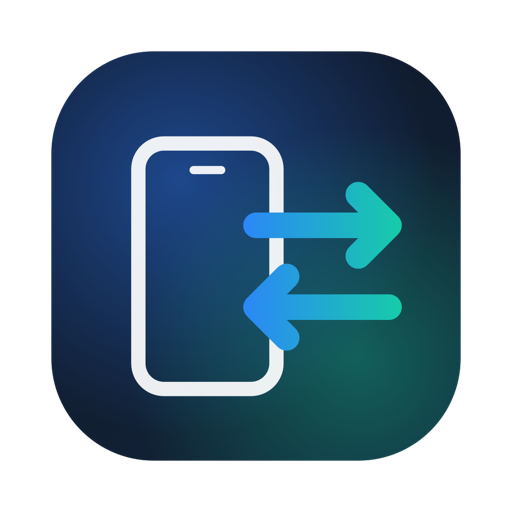
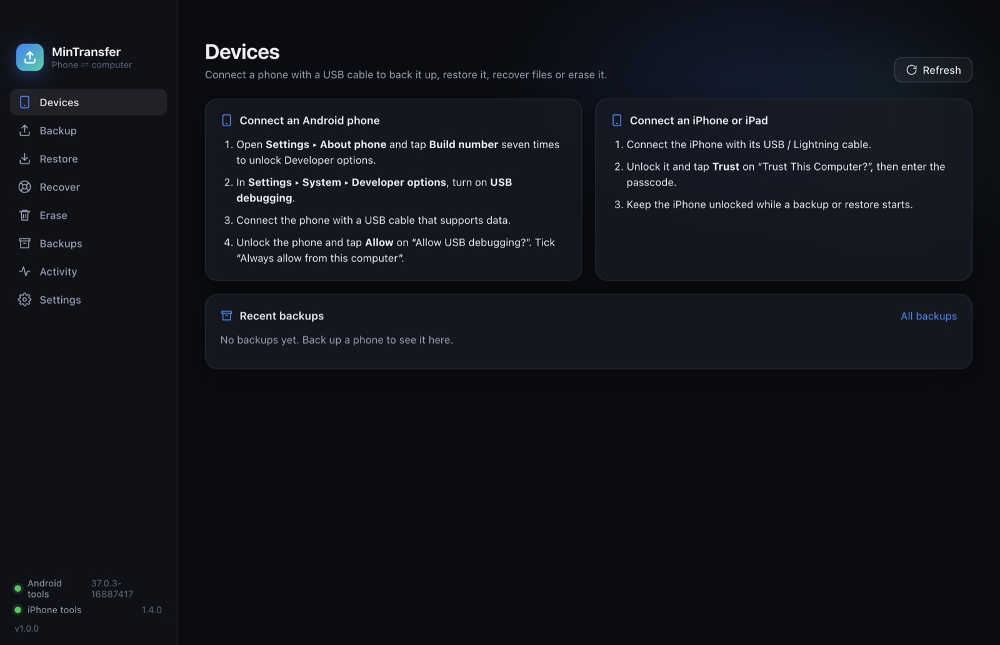
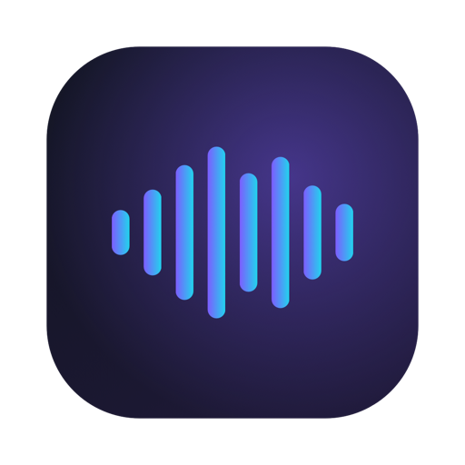
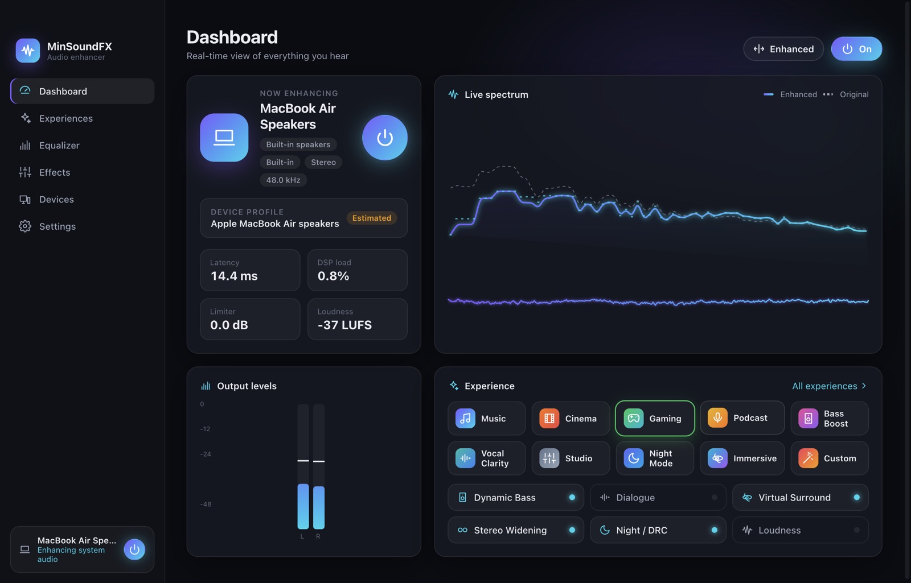
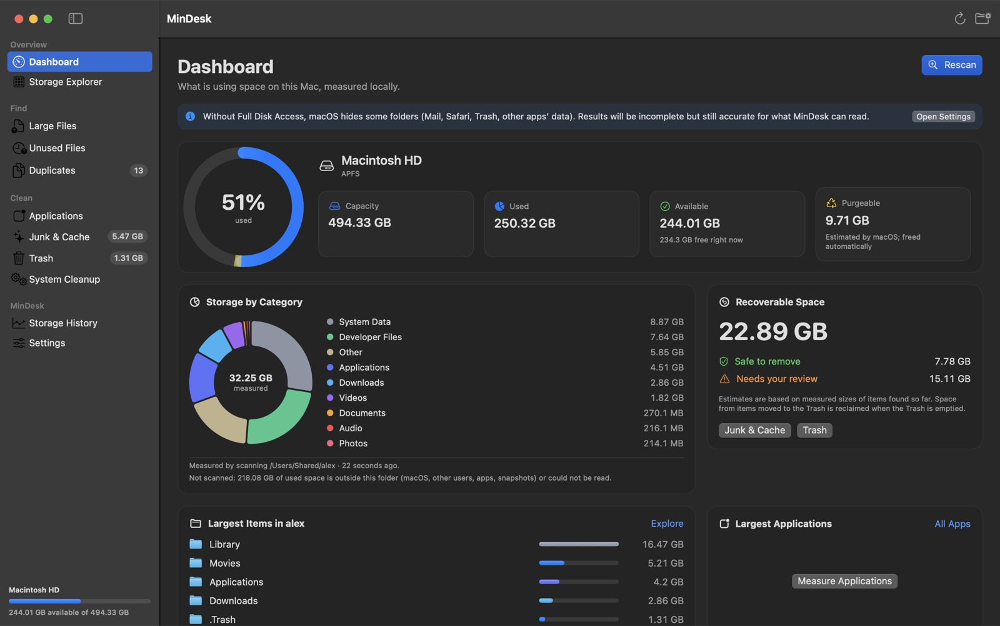
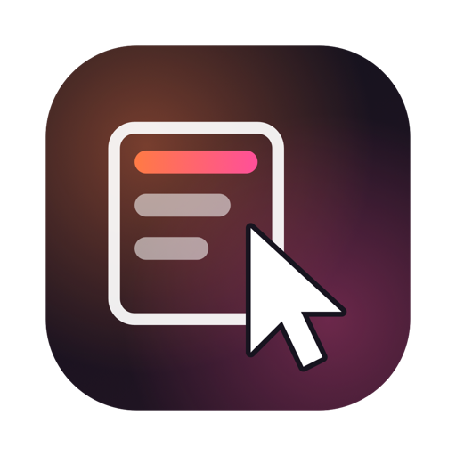
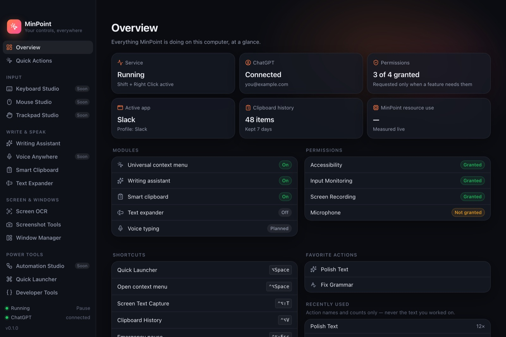

One app, both phones
iPhone, iPad and Android on macOS and Windows, with the same five actions: Transfer, Backup, Restore, Recover, Erase.
Free · Open source · Local-only
MinLabz builds focused desktop tools that do one job well and never phone home. Move your phone, tune your sound, clean your disk, command your desktop.
Drag to spin · click a tile to jump

Phone ⇄ Computer
Back up, restore, recover and erase iPhone and Android phones from your Mac or PC.

iPhone, iPad and Android on macOS and Windows, with the same five actions: Transfer, Backup, Restore, Recover, Erase.
Speaks Apple's MobileBackup2 protocol, so backups are complete, restorable and optionally encrypted, just like Finder's.
Recently Deleted photos, messages with attachments, notes, call history, voice memos and WhatsApp chats from any unencrypted backup.
Photos, videos, apps (including split APKs), contacts and WhatsApp media over Google's own adb, set up automatically.

System-wide audio
Make everything your computer plays sound better: music, films, games and calls.

A C++17 DSP engine processes Spotify, YouTube, Netflix, games: anything that plays through your output device.
35 headphone and earbud corrections from published lab measurements, clearly labelled Measured, Estimated or Generic.
Virtual surround, dynamic bass, dialogue boost, loudness normalisation and night mode, each adjustable live with A/B compare.
An always-on look-ahead limiter and automatic headroom. Quit or uninstall and your normal audio path comes straight back.
Native macOS storage
See what's filling your Mac, and clean it up without breaking anything.

System folders, snapshots, keychains, Mail, iCloud Drive and Photos libraries are hard-blocked in code.
Every removal goes through one review screen with exact paths and sizes. Permanent deletion needs an extra confirmation.
Each finding says why it was flagged and whether it's Safe, Review Required or Protected.
Measured allocated bytes, hard links counted once, and anything unreadable is reported as incomplete, never guessed.

Shift + Right Click, anywhere
Your computer. Your controls. Writing help, clipboard, snippets, screen text, windows and a launcher behind one gesture.

Hold Shift and right-click in any app. The menu adapts to selected text, text fields or the desktop. A normal right-click is untouched.
Polish, fix grammar, change tone, shorten or translate, with a word-level diff preview. Replace puts the result right where your selection was.
Opt-in, encrypted clipboard history that skips password managers, plus a text expander with date, clipboard and cursor variables.
Drag over an image, video or error dialog and get the text back, recognised on-device. Plus window snapping and a quick launcher.
Your files, audio and phone data stay on your machine. No telemetry.
Download, open, use. No sign-up, no subscription, no upsell.
MIT licensed. Read every line on GitHub, build it yourself if you like.
Each app says what it can and can't do, and labels guesses as guesses.
Always the latest release, pulled live from GitHub.
Loading…
Loading…
Loading…
Loading…
The builds are signed ad hoc but not yet notarized by Apple, so macOS warns the first time. Right-click the app in Applications, choose Open, then Open again. Or run:
xattr -dr com.apple.quarantine /Applications/MinTransfer.app(swap in MinSoundFX.app, MinDesk.app or MinPoint.app). On Windows, SmartScreen may warn because the installer isn't code-signed yet: choose More info ▸ Run anyway.